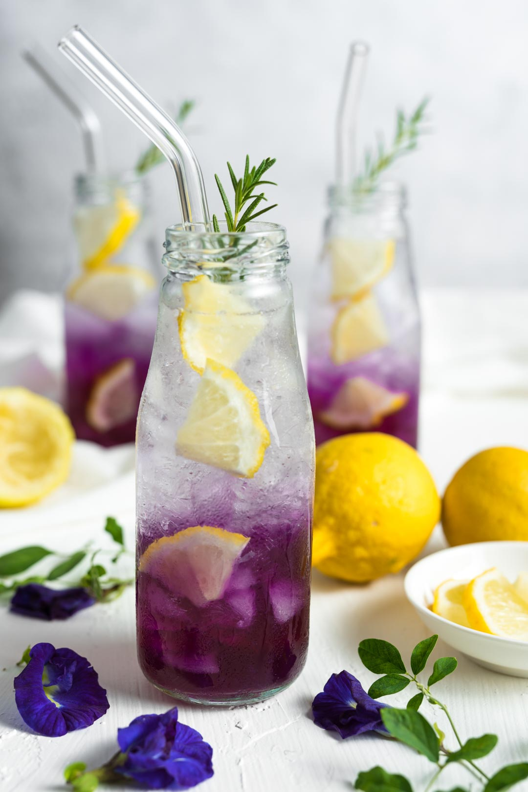

AVOCADO BULGUR SALAD
Chinese Noodles
Singapore Noodles
How to make Singapore noodles
How to make Singapore noodles – soak the noodles in a large bowl of cold tap water until pliable and slightly soft. Drain well.Prep the vegetables and proteins – slice the onion, julienne the carrot and bell pepper, and cut the green onions in to 1-2 inch lengths. Cut the meats into slices/bite sizes and peel and clean the shrimp.
Prep the seasoning – in a bowl, mix together chicken stock, oyster sauce, curry powder, toasted sesame oil, salt, and sugar. Set aside.
Cook the eggs – lightly beat the eggs, season with salt, then scramble in a large pan or wok until mostly set. Scoop the eggs out and set aside.
Cook the proteins – if your pan needs it, give a bit of a wipe then stir fry the proteins, moving and tossing, until they’re cooked.
Cook the vegetables – add the vegetables to the wok/pan and cook, stirring, and tossing, until the vegetables are crisp. This step won’t take long at all.
Mix and Toss – add the noodles, the sauce you made earlier, and the eggs. Use a scooping lifting motion to toss and combine everything together until the noodles are hot and the ingredients are well distributed and seasoned. Taste and adjust if needed.
Enjoy – eat up while fresh and hot!
French Bakery
Pain au Chocolats
How to make Pain au Chocolats
1.Preliminary notes2.Make the dough
3.Remove dough from the bowl and, with floured hands, work it into a ball. Place the dough on a lightly floured silicone baking mat lined, lightly floured parchment paper lined, or lightly floured baking sheet.
4.Shape the dough: You’re rolling it out into a rectangle in this step, so shaping it with your hands first helps the stretchy dough.
5.Long rest:Cover the rolled out dough with plastic wrap or aluminum foil, place the entire baking sheet in the refrigerator and allow the covered dough to rest in the refrigerator for 4 hours or overnight.
6.Butter layer (begin this 35 minutes before the next step so the butter can chill for 30 minutes)
7.Laminate the dough
8.Shape the croissants
9.Egg wash:Brush each lightly with egg wash.
10.Bake the croissant
GLUTEN-FREE
Cinnamon-Crisp Coffee Cake
Sandwich Bread

BUTTERFLY PEA TEA LEMONADE

Indian
Murgh Makhani
--RECIPES--